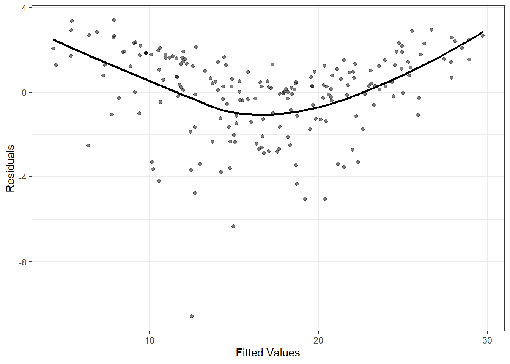

In this lesson, we will perform diagnostics to detect violations to the linearity, independence, constant variance, and normality assumptions on a regression model on real data in R.
Consider again our marketing data:
The following dataset contains measurements related to the impact of three advertising medias on sales of a product, \(P\). The variables are:
youtube: the advertising budget allocated to YouTube. Measured in thousands of dollars;
facebook: the advertising budget allocated to Facebook. Measured in thousands of dollars;
newspaper: the advertising budget allocated to a local newspaper. Measured in thousands of dollars.
sales: the value in the \(i^{th}\) row of the sales column is a measurement of the sales (in thousands of units) for product \(P\) for company \(i\).
The advertising data treat “a company selling product \(P\)” as the statistical unit, and “all companies selling product \(P\)” as the population. We assume that the \(n = 200\) companies in the dataset were chosen at random from the population (a strong assumption!).
First, let’s fit our regression model on the data.
But these plots are kind of ugly. We can make them better with ggplot!
Using ggplot
ggplot takes a bit more work to generate diagnostic plots. But the efforts are worth it, I think!
First, we’ll need to store the quantities important to diagnostics in a data frame.
df.diagnostics =data.frame(yhat =fitted(lm_marketing), r =resid(lm_marketing), y = marketing$sales,youtube = marketing$youtube, facebook = marketing$facebook, newspaper = marketing$newspaper)
Linearity, nonconstant variance, and normality
Now, let’s take a look at potential violations of the linearity, nonconstant variance, and normality assumptions. Produce a fitted vs observed plot using ggplot. Analyze this plot..
#YOUR CODE HEREoptions(repr.plot.width =6, repr.plot.height =6)ggplot(df.diagnostics, aes(x = y, y = yhat)) +geom_point(alpha=0.5) +geom_smooth(se = F, col ="#CFB87C") +#se = "standard error" (set equal to False (I think))geom_abline(intercept =0, slope =1) +xlab("Observed Values") +ylab("Fitted/Predicted Values") +theme_bw()
YOUR ANSWER HERE
For the observed vs predicted value plot, it should follow the black line (y = x), with only random deviations.
However, in this case we observe some curvature as captured by the gold curve. This curvature indicates to us that for high values of the response (about 22), the model is under-predicting (because the fitted values are lower than the observed values).
For the middle values of the response, there is an over-prediction, and for low values of the response, there is somewhat of an under-prediction, however we do observe more variability.
All in all, this suggests to us that the structural part of the model is misspecified.
We now observe the residual vs fitted plot.
Now produce a residual vs. fitted value plot. Analyze the plot.
#YOUR CODE HEREggplot(df.diagnostics, aes(x = yhat, y = r)) +geom_point(alpha=0.5) +geom_smooth(se = F, col ="black") +xlab("Fitted Values") +ylab("Residuals") +theme_bw()

YOUR ANSWER HERE
From the above plot, we verify that there exists some curvature in the data that is not being captured by our model. However, do note that, other than an outlier (very small residual), we do not seem to observe a difference in variability of the residuals across the fitted values.
Thus, we do not have evidence of a violation in the non-constant variance assumption.
Given the structural issues in this model, it’s difficult to use this plot to assess the normality assumption. In general, we should stop here to address the issues we have before moving on to the normality assumption. But let’s just take a quick look at the Q-Q plot.
Produce a qq plot of the residuals. Comment on the plot.
Again, we observe some deviation (especially) in the tails of the distribution. The non-normality that we observe here is most likely due to (1) the outlier, and (2) the violation of the linearity assumption.
Independence
To assess the independence assumption, let’s take a look at a successive residual plot and a residual vs index plot. Note that the data doesn’t provide us with any natural ordering, e.g., time or distance measurements. So, let’s first just use the ordering given to us.
n =dim(marketing)[1]; x =head(df.diagnostics$r, n-1)y =tail(df.diagnostics$r, n-1)cor(x,y)
ggplot(df.diagnostics, aes(x =1:length(marketing$sales), y = r)) +geom_point(alpha =0.5) +xlab("Index") +geom_smooth(se = F, col ="black") +ylab("Residuals") +theme_bw()
Unsurprisingly, given a lack of a natural ordering, we don’t see any real patterns in this plot. maybe we can order the points according the different budgets. We can start with youtube. Plot the residuals of the fitted model ordered according to the youtube variable. The arrange() function in the tidyverse can help with this!
library(tidyverse)#YOUR CODE HEREdf.diagnostics.order =arrange(df.diagnostics, youtube) # order the data according to the youtube variablehead(df.diagnostics.order)
ggplot(df.diagnostics.order, aes(x=1:length(marketing$sales), y = r)) +geom_point(alpha =0.5) +geom_abline(slope =0, intercept =0) +xlab("index") +geom_smooth(se = F, col ="black") +ylab("Residuals") +theme_bw()
YOUR ANSWER HERE
If the independence assumption is satisfied, the residuals will be randomly scattered around the zero, i.e. there should be no correlation between successive errors under this ordering. There appears to be some structure. This may be due to non-linearity in the data, however there is a high correlation between successive residuals when ordered with respect to youtube.
You can look at the other possible orderings on your own :)
x =head(df.diagnostics.order$r, n-1)y =tail(df.diagnostics.order$r, n-1)cor(x,y)
[1] 0.2516592
Summarize your findings about whether, and the extent to which, the model assumptions have been voilated.
YOUR ANSWER HERE
At this point, we’ve uncovered some assumption violations.
There seems to be some curvature in the data that our model is not capturing (violation of linearity assumption).
We also observe violations to the normality assumption and potentially to the independence assumption. But these violations may be due to to the violation of linearity, that is, if we added a predictor that captured systematic variability in the data, we might observe better QQ plots and residual plots
Problem #2
Simulate two different datasets for SLR: one violating the nonconstant variance assumption (you might consider making your variances a function of the predictor), and another violating the linearity assumption. Produce the relevant diagnostic plots.
# Simulation for violating nonconstant varianceset.seed(2016)#YOUR CODE HEREn =45x =runif(n,0,1)y =1+ x +rnorm(n,0,abs(x)) #("+ rnorm(...)" portion is adding some noise)lmod =lm(y ~ x)summary(y)
Min. 1st Qu. Median Mean 3rd Qu. Max.
0.6433 1.0529 1.3241 1.4514 1.8058 3.2693
# residual vs fitted plotpar(mfrow =c(2,2))plot(lmod)
# Plot of the residuals vs fitted values (just to make plot pretty)#YOUR CODE HEREoptions(repr.plot.width =5, repr.plot.height =4)p1 <-ggplot(lmod, aes(.fitted, .resid)) +geom_point() p1 <- p1 +stat_smooth(method ="loess", col ="#CFB87C", se =FALSE) +geom_hline(yintercept =0, col ="#A2A4A3", linetype ="dashed") p1 <- p1 +xlab("Fitted Values") +ylab("Residuals") p1 <- p1 +ggtitle("Residuals vs. Fitted Plot") +theme_bw() +theme(plot.title =element_text(hjust=0.5))p1